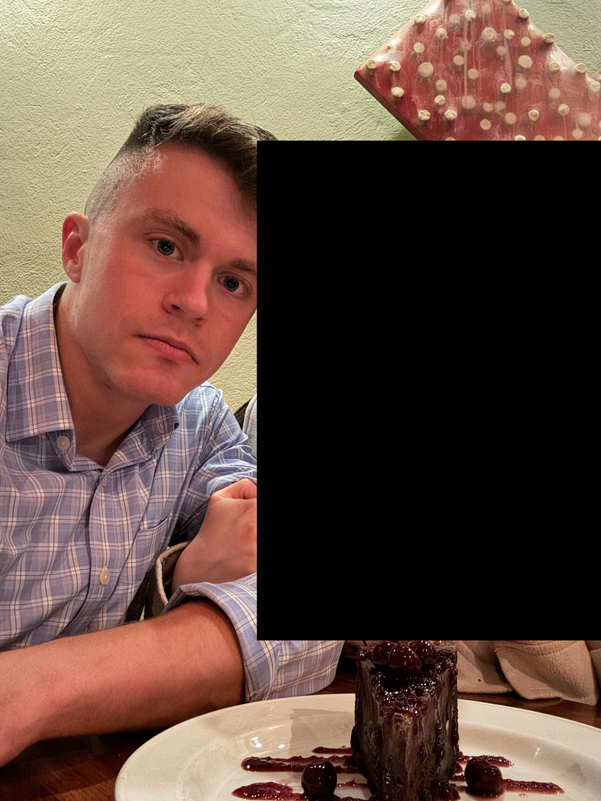
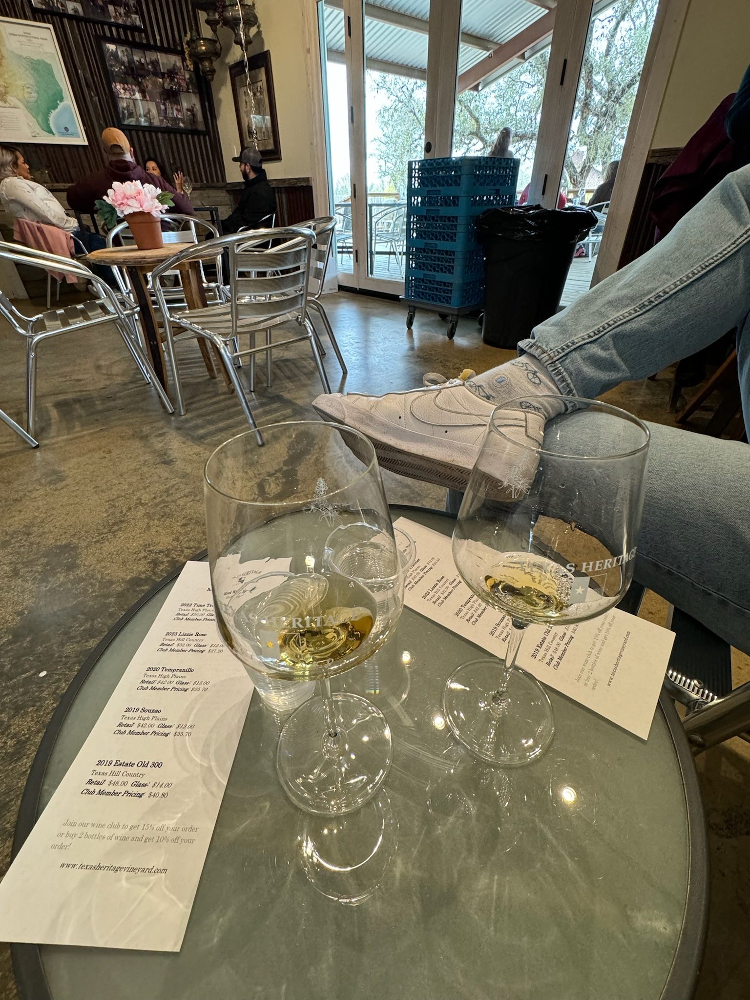
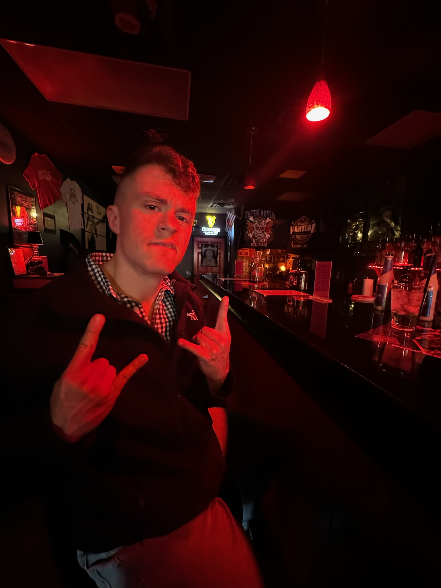

Fredericksburg trip report from 08-10 March 2024.
X and I left home base armed to the teeth with snacks, drinks, and childish excitement at the weekend festivities that awaited us in the German town of Fredericksburg (FB). The beautiful weather and scenic drive combined well with the banger of a playlist X compiled, making for a fun drive (along with playing the extremely-distracting-for-multiple-reasons game "Perfiddle" (or something like that, I butchered the name and just kept with Perfiddle) she taught me). The stretch of road just outside of FB was especially beautiful: golden afternoon sunlight shone through the small orchards and on the vast grassy fields. Was this heaven?
The Airbnb we stayed at was wonderful and legitimately deserving of five stars for a few reasons:
X and I changed into our finest dinner attires and walked to Otto's German Bistro, one of FB's few upscale restaurants. And fine dining it was:
The entire meal—food, company, and vibe—was phenomenal.
I begrudgingly left the warmness and coziness of the bed for a training ride in the 40 °F weather and steady 20 mph wind. I seemed to have forgotten what hard hill riding feels like.
With feet dethawed in the warm shower and our second finest attires donned, we headed out for another tasty day, starting at Hill & Vine with a chicken schnitzel scramble, toast, and coffee. My blinders were fully engaged the entire time.
A windy 10-minute walk put us at the pickup point of the 290 Wine Shuttle. What a freaking awesome business, both in the idea and the execution: simply pay $30 and get all-day access to multiple shuttles along a route of 14 wineries. No Ubers, no DDing, no limi...just kidding.
(I know very little about wine so the next few paragraphs just talk about the winery itself, not the wine.)
First stop was Texas Heritage Vineyard. The tasting featured mostly reds, including one smoky wine (they make that??), and a pretty overt soft launch.
The second stop was Grape Creek Vineyards, which has apparently "garnered more than 100 medals from California to New York" according to 290WS's welcome email. The entrance and grounds seemed to corroborate this claim. The landscaping was meticulously manicured, the members-only areas pristine and exclusive, and the staff smiley and inviting. We met A, C, L, and S in line after I got to talking to him about his hat, eventually learning they were wine enthusiasts by way of:
Me: So how many bottles of wine you think have in your house?
Him: I have about 12 to 15 hundred in my cellar
Key word there is cellar. This is how I imagine the matrix of rich-poor knowledgable-ignorant wine enthusiasts:
| Rich | Poor | |
|---|---|---|
| Knows everything about wine | Has a badass cellar with a ton of wine | Poor because has a badass cellar with a ton of wine |
| Knows nothing about wine | Possibly has a badass cellar with a ton of wine | See local grocery store wine deals |
But seriously, 1200-1500? The other guy had downsized his collection to a meager 600-800! Pshhhhh. They were namedropping bottles left and right and talked about investing in wine futures through the multiple wine clubs they were a part of. C also showed us how to better appreciate the notes and flavors within a wine through a borderline-gargling technique that caused me to inhale some wine down the wrong pipe and erupt in a violent coughing fit. We politely rejected the wine club registration I had been forewarned about and headed out to our final stop, the nothing-special-about-it Fat Ass Brewery, for a flight of beers before hopping back onto the shuttle to head back to FB. Supposedly this is backwards to how people normally do it: you start at FAB, get trashed on their cheap alcohol, then go to Grape Creek and get taken advantage of by their nice salespeople.
One piggyback ride and good deed later put us back at the car. We headed home to clean up and relax in the room that was absolutely covered in ***golden afternoon sunlight***.
Dinner was at The Auslander, but included a 45-minute wait, so we did what any normal people would do and went to the heavy metal bar next door to take ice cream shots and enjoy Lamb of God's soothing melodies. Two rounds later and we ended up in another store for another two shots, this time peach Jell-O and Fireball, a match made in the heaven that was this random FB convenience store run by a very kind woman. The table-ready text finally came through, guiding us to a dinner of beers, multiple sausages, and hefty banter.

[fb history] [percentage of german speakers] [wine club info]